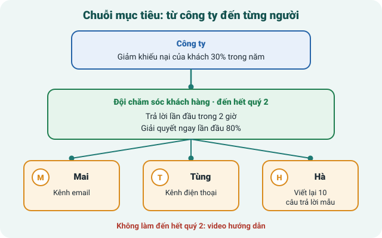

K2 · Trình bày và viết rõ ràng › Bậc 5 Dẫn dắt
Nói rõ mục tiêu để cả đội hiểu và làm
Bài này làm Tờ 2: Mục tiêu đội một trang. Mẫu in. Cách viết ngắn, có số liệu đã học ở Thuyết phục không cần chức danh (N4).
1. Mục tiêu
- Viết Mục tiêu đội một trang: vì sao, 2–3 kết quả đo được, việc không làm, phần của từng người.
- Kiểm tra đội hiểu đúng bằng cách nhờ 2 người nói lại bằng lời của họ.
2. Khởi động truy xuất
- Ba cột của Bản chuyển vai là gì?
- Ba câu xin phản hồi nhiều chiều là gì?
3. Giải thích
Một đội làm chăm chỉ vẫn có thể đi sai hướng. Thường là vì mỗi người hiểu mục tiêu một kiểu. Việc của quản lý là nói mục tiêu đủ rõ để ai cũng tự chọn việc đúng.
Mục tiêu đội một trang có năm phần.
- Vì sao: mục tiêu đội góp vào mục tiêu nào của đơn vị. Một, hai câu, có số liệu hiện tại.
- Kết quả cần đạt: 2–3 kết quả đo được, có hạn. Nhiều hơn thì đội khó nhớ và dễ dàn trải.
- Không làm: việc đội sẽ tạm dừng hoặc từ chối để tập trung.
- Phần của từng người: mỗi người góp vào kết quả nào.
- Cách theo dõi: xem số liệu ở đâu, khi nào.

Nói thế nào để đội nhớ. Nói "vì sao" trước, rồi mới đến "cái gì". Dùng cùng một câu ngắn ở mọi nơi: buổi họp, bảng tin, tin nhắn nhóm. Nhắc lại đều đặn, vì một lần nói chưa đủ để nhớ.
Kiểm tra hiểu đúng. Đừng hỏi "mọi người hiểu chưa?". Câu đó gần như luôn nhận được "hiểu rồi". Hãy nhờ hai người nói lại bằng lời của họ: "Tháng này, việc nào em sẽ ưu tiên? Vì sao?"
Tờ 2. Mục tiêu đội một trang
- Vì saoGắn với mục tiêu đơn vị, có số hiện tại.
- 2–3 kết quảĐo được, có hạn.
- Không làmViệc tạm dừng để tập trung.
- Phần của từng ngườiAi góp vào kết quả nào.
- Theo dõiSố liệu ở đâu, xem khi nào.
Nếu đội nói lại sai, đó là tín hiệu cho bạn. Sửa cách nói, không trách người nghe.
4. Ví dụ tại nơi làm việc Việt Nam
Tình huống giả định. Anh Khoa là trưởng nhóm chăm sóc khách hàng 5 người ở một công ty bán đồ gia dụng trực tuyến tại Đà Nẵng. Công ty đặt mục tiêu năm: giảm khiếu nại 30%.
Trước đây, anh Khoa chỉ nói: "Năm nay mình phải phục vụ khách tốt hơn." Mỗi người hiểu một kiểu. Có người trả lời nhanh nhưng sơ sài. Có người trả lời kỹ nhưng để khách chờ cả ngày.
Anh viết Tờ 2. Vì sao: khách chờ trung bình 9 giờ mới có trả lời đầu tiên; nhiều khiếu nại đến từ việc chờ lâu. Kết quả: trả lời lần đầu trong 2 giờ, giải quyết ngay lần đầu 80%, đến hết quý 2. Không làm: tạm dừng làm video hướng dẫn đến hết quý 2. Từng người: Mai lo kênh email, Tùng lo điện thoại, Hà viết lại 10 câu trả lời mẫu.
Cuối buổi họp, anh hỏi Tùng: "Tuần này em ưu tiên gì?" Tùng nói: "Nghe máy nhanh." Anh nói rõ thêm: nghe nhanh là một nửa, nửa kia là giải quyết ngay trong cuộc gọi đầu.
Vì sao cách này tốt: mục tiêu có số, có hạn, có việc không làm. Anh kiểm hiểu bằng câu hỏi mở và sửa ngay chỗ hiểu thiếu.
5. Thực hành
Tình huống giả định. Bạn là trưởng ca ở một nhà hàng lẩu tại Cần Thơ, quản lý 8 nhân viên phục vụ. Quản lý nhà hàng muốn tăng số khách quay lại. Hiện khách hay phàn nàn chờ gọi món lâu vào giờ cao điểm.
Viết Tờ 2 cho ca của bạn. Viết một câu hỏi để kiểm tra nhân viên hiểu đúng.
Gợi ý 1
"Phục vụ tốt hơn" chưa đo được. Đo cái gì trong giờ cao điểm? Thời gian từ lúc khách ngồi đến lúc gọi món?
Gợi ý 2
Việc không làm có thể là một việc phụ trong giờ cao điểm, dời sang giờ vắng.
Lời giải mẫu
- Vì sao: nhà hàng muốn tăng khách quay lại. Phàn nàn nhiều nhất là chờ gọi món lâu lúc 18–20 giờ.
- Kết quả: khách được nhận món trong 5 phút sau khi ngồi; dưới 3 phàn nàn về chờ mỗi tuần; đến hết tháng 1.
- Không làm: không lau dọn kho, gấp khăn trong 18–20 giờ; làm việc này trước 17 giờ.
- Từng người: mỗi người phụ trách một khu 5 bàn; một người đi lại hỗ trợ khu đông nhất.
- Theo dõi: ghi giờ khách ngồi và giờ gọi món trên phiếu; xem lại mỗi tối thứ Hai.
- Câu kiểm hiểu: "Lúc 19 giờ, bàn mới vào mà em đang gấp khăn, em làm gì trước?"
(Số liệu là giả định.)
6. Tự kiểm tra
Chọn đáp án. Mỗi lựa chọn đều có giải thích.
Câu 1. Kết quả nào nên đưa vào Mục tiêu đội một trang?
-
Chưa đúng. Chuyên nghiệp hơn là bao nhiêu thì không ai biết. Đội không tự kiểm tra được.
-
Đúng. Đúng. Có số hiện tại, số cần đạt và hạn. Ai cũng biết đội đang ở đâu.
-
Chưa đúng. Chín kết quả thì đội khó nhớ và dễ dàn trải. Chọn 2–3 kết quả quan trọng nhất.
Câu 2. Vì sao Tờ 2 có phần "Không làm"?
-
Chưa đúng. Phần này nêu một vài việc cụ thể tạm dừng, không phải để từ chối mọi thứ.
-
Đúng. Đúng. Nói rõ việc không làm giúp đội chọn đúng khi thời gian có hạn.
-
Chưa đúng. Mục đích là tập trung, không phải để báo cáo ít việc.
Câu 3. Cách nào kiểm tra tốt nhất xem đội đã hiểu mục tiêu?
-
Chưa đúng. Câu này gần như luôn nhận được "hiểu rồi", kể cả khi chưa hiểu.
-
Đúng. Đúng. Nghe họ nói lại bằng lời của mình, bạn thấy ngay chỗ hiểu lệch.
-
Chưa đúng. Gửi file không cho bạn biết người đọc hiểu đến đâu.
Câu 4. Hai người nói lại mục tiêu sai theo cùng một kiểu. Bạn nên nghĩ gì trước?
-
Chưa đúng. Khi nhiều người hiểu sai giống nhau, nguyên nhân thường nằm ở cách nói.
-
Đúng. Đúng. Hiểu sai là tín hiệu để bạn sửa cách truyền đạt, không phải để trách người nghe.
-
Chưa đúng. Hiểu sai không có nghĩa là mục tiêu sai. Hãy làm rõ trước khi đổi mục tiêu.
7. Phản tư
- Nếu hỏi ngẫu nhiên hai người trong đội "mục tiêu của đội là gì", họ sẽ nói gì?
- Việc nào đội bạn nên tạm dừng để tập trung hơn?
8. Áp dụng thật
Trong 7 ngày tới, làm Tờ 2 và trình bày ở buổi họp đội. Cuối buổi, nhờ hai người nói lại ưu tiên của họ. Ghi lại chỗ họ hiểu khác bạn.
9. Siêu dữ liệu
| skill | K2 · Trình bày và viết rõ ràng |
|---|---|
| level | Bậc 5 · Dẫn dắt |
| group | N5 |
| framework_map | WEF: Leadership and social influence; SkillsFuture CCS: Communication; Influence; NACE: Communication; Leadership; CSfW: 2a Communicate for work (chỉ dẫn chiếu) |
| updated | 2026-11-14 |
Hoàn thành bài
Đánh dấu đã học để site gợi ý lịch ôn sau 1, 3 và 7 ngày. Dữ liệu chỉ lưu trên máy của bạn.
Lịch ôn gợi ý: